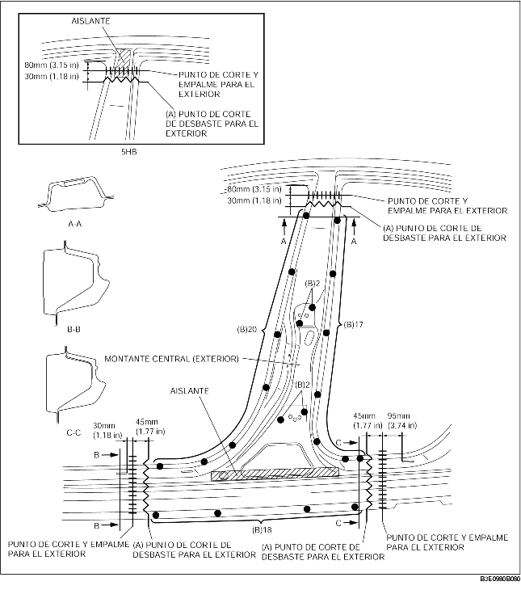
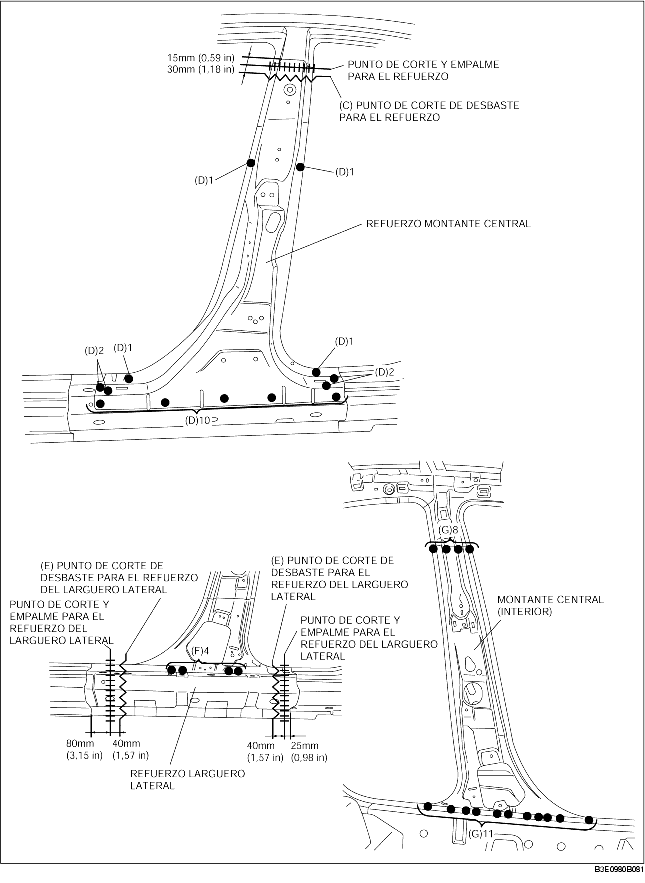

1. Efectuar el corte de desbaste en el área (A), taladrar los 59 puntos de soldadura indicados por (B), luego quitar el montante central (exterior).
2. Efectuar el corte de desbaste en el área (C), taladrar los 18 puntos de soldadura indicados por (D), luego quitar el refuerzo del montante central.
3. Efectuar el corte de desbaste en el área (E), taladrar los 4 puntos de soldadura indicados por (F), luego quitar el refuerzo del larguero lateral.
4. Taladrar los 19 puntos indicados por (G) y quitar el montante central (interior).

